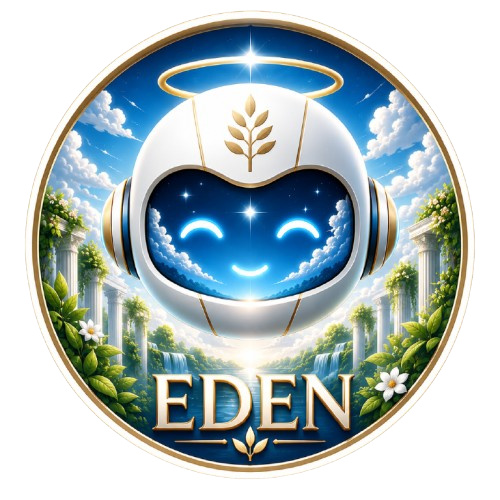

Conversas e interação
Uma presença amigável para conversar e tornar os momentos do dia menos solitários.

ADÃO ROBÔ COMPANHEIRO/ASSITENTEO Adão é um robô companheiro pensado para deixar os momentos de trabalho, estudo e descanso mais leves, organizados e acolhedores.

O Adão foi desenvolvido como um robô companheiro para pessoas que desejam ter mais interação durante a rotina, seja em casa, no escritório ou nos estudos.
Ele une assistência e conversa para tornar o ambiente mais agradável, sem ocupar o lugar das relações humanas.
Recursos pensados para apoiar a organização e trazer mais leveza ao dia.
Uma presença amigável para conversar e tornar os momentos do dia menos solitários.
Ajuda a lembrar compromissos, pausas e atividades importantes.
Ajuda a acompanhar tarefas e estruturar melhor o dia.
Contribui para um ambiente mais leve durante o trabalho, os estudos e o lazer.
A tecnologia deve tornar a vida mais humana, não substituir aquilo que nos conecta.A ideia por trás do Adão
O Adão pode fazer parte de diferentes momentos da vida: da concentração no escritório às horas de estudo em casa.
Organização, lembretes e interação.
Apoio para organizar tarefas e estudos.
Uma presença amigável no cotidiano.
Adão: tecnologia, praticidade e companhia em um só projeto.
startupprojetoeden@gmail.com